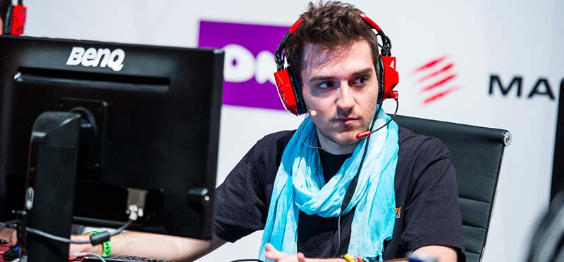
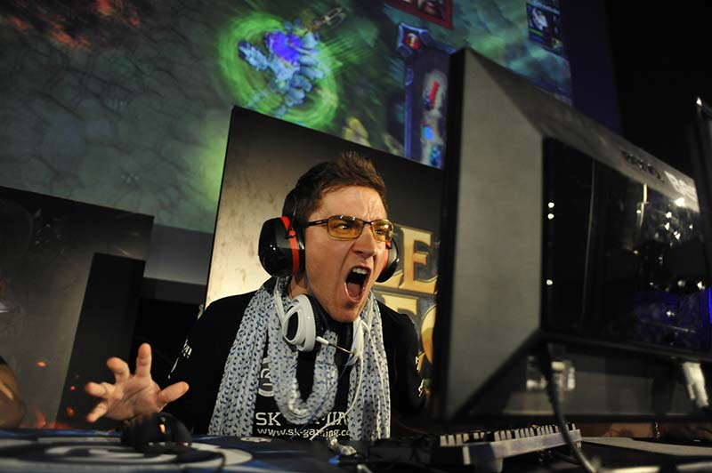
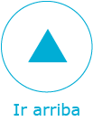

El éxito imparable de los eSports en España tiene un nombre propio: Ocelote. Detrás de este alias se encuentra Carlos Rodríguez Santiago, un español que dominó como jugador profesional en dos de los títulos más exigentes de la escena competitiva: World of Warcraft y League of Legends.
El jugador profesional de videojuegos y un empresario exitoso tienen muchos puntos en común, como no quedarse a gusto con una derrota. “Soy la típica persona que no le gusta perder a nada, por lo que comencé a tomármelo muy en serio. Resulta que la industria fue desarrollándose y empezó a ser un negocio, por lo que pude tener un trabajo; un trabajo que además me gustaba. Comencé a ganarme la vida como jugador profesional en torneos por todo el mundo”.
Sin embargo, Carlos nos descubre que la vida de un jugador de eSports es muy corta. Mucho más corta que la que puede tener un futbolista, por poner un ejemplo fácil de entender. “Un jugador de fútbol profesional tiene una vida deportiva de 15 años. Sin embargo, la de un jugador de videojuegos es mucha más corta: 3 o 4 años”, explica.
El motivo de este enorme desgaste son las horas de entrenamientos necesarias para convertirse en uno de los mejores del mundo: “El desgaste en los eSports es psicológico y no tanto físico. Los jugadores entrenan de 10 a 14 horas diarias, en comparación con un jugador de fútbol que lo hace entre 1 y 3 horas. Entrenar cinco veces más al final te quema”.
Carlos comenta que al haber destacado en dos tipos de videojuegos totalmente diferentes (World of Warcraft y League of Legends) le dio la oportunidad de alargar su carrera: “Yo competí 9 años porque supe reciclarme. Son dos juegos que no se parecen y pude adaptarme. Cuando juegas a uno solo, en el tercer año, acabas cansándote por todas las horas necesarias”.
No obstante, Ocelote no cambiaría nada de lo hecho en su vida y aconseja a todos aquellos que se divierten jugando a videojuegos que entren en el mundo del deporte electrónico. Aunque para ello, lo primero que tienen que cumplir es que les guste la competición. “Cualquier tipo de eSport es una competición, por lo que si no te gusta competir, ¡apaga y vámonos!”, argumenta. “También hace falta que se tenga la habilidad de inspirarte y automotivarte, ya que muchas veces puedes no querer jugar o entrenar. Solo los que trabajan más se acaban llevando el trofeo”.
Obviamente, también hace falta talento, como todo en esta vida. Se puede tener mucho interés o poner ganas en el entrenamiento diario, pero si no se nace con esa agudeza, no se logrará llegar lejos: “También hace falta talento, nacer con reflejos y saber lo que ocurre en el mapa de juego. Hay saber anticiparse al contrario. Hay que ir dos o tres pasos por delante del contrario. No obstante, lo que más cuenta son las horas de entrenamiento y lo efectivo que este sea”.
Ahora, como un empresario que comienza a tener éxito, muchos se preguntan si pueden seguir el camino de Carlos y crear su propio equipo o dedicarse a la dirección de una empresa. Sin embargo, Ocelote no cree que este sea un paso lógico (el paso de jugador a empresario). El ejemplo vuelve a estar en el fútbol: “¿Cuántos jugadores de fútbol se convierten en empresarios al acabar su carrera? No creo que sea un paso lógico que un jugador sea un directivo como yo he hecho. Aunque también depende de la habilidad de cada uno. Cuando la vida profesional se acaba es muy difícil que ese jugador sea útil más allá del juego”.
El exjugador y ahora empresario ha sabido ganarse la vida en lo que le gusta y además, con buen criterio, presume de ello: “Yo he tenido suerte de haber nacido con amor a los dos mundos. De pequeño me gustaba el tema de los negocios, los números, la estrategia e incluso la historia (cómo los grandes conquistadores trazaban sus estrategias). Que a mi mente le guste este tipo de cosas me ha llevado a ser empresario”.
Aunque la vida de un deportista electrónico es muy corta, el futuro dentro de la industria, si se quiere tomar, está casi asegurado. “El paso lógico de un jugador profesional es convertirse en un analista o ser entrenador. Las habilidades adquiridas casan bien con ser analista por poner un ejemplo. También puede dedicarse a ser caster. Si tiene carisma y soltura en público, puede tomar ese camino”.
G2 eSports, el equipo creado por Carlos, tiene una estructura de seis formaciones diferentes: League of Legends, Counter-Strike, HearthStone, Vain Glory, Overwatch y FIFA. Todos ellos son equipos top en todo el mundo. El de LoL ocupa la primera posición actualmente en el ranking europeo, y no duda en calificar a su equipo de HearthStone como el mejor del mundo. Además, junto con el patrocinio de Vodafone, acaba de crearse un equipo totalmente español de League of Legends, G2 Vodafone, que además de estar formado por cinco de los mejores jugadores nacionales, funciona como cantera del equipo titular, que tiene la sede en Berlín. El team FIFA cuenta con uno de los mejores jugadores españoles, Fernando ‘Ferperry’ Martínez, y además en poco tiempo se unirá todo un campeón de España, del cual no quiso revelar su nombre.
Tras conocer cómo están formados sus diferentes equipos, Carlos explica cómo fue el proceso de creación de su equipo: “Lo primero que tuve que hacer fue invertir una gran parte del dinero ganado como jugador. Al principio fue un poco complicado porque ves que el dinero se gasta. Es una forma de energía finita. Tienes que aprender a ganar dinero. He sido jugador durante nueve años y ahora tengo que aprender a ganar dinero. Mi pregunta era: ¿cómo me convierto en un vendedor?”.
Continúa: “Tienes que empezar a estudiar. Tienes que pasar muchas horas con gente que sabe más que tú. Tienes que viajar mucho. Tienes que descubrir habilidades que jamás sabías que tenías. Tienes que estar muy abierto al cambio. La necesidad crea el miedo, y ese miedo nos hace mejores en ciertos aspectos”.
Una vez que el club se consolida y se pone en funcionamiento, según Ocelote, es igual que a cualquier otra empresa: “Tenemos un CEO, que en este caso soy yo, tenemos operaciones, team manager, marketing, community managers, diseñadores gráficos, editores de vídeos. En total son 20 empleados/freelancers sin contar jugadores”.
El funcionamiento de los equipos de G2 es casi como el de un reloj de precisión. A Ocelote le gusta el trabajo serio, y para ello está muy pendiente de todos los detalles: “En cada equipo hay un manager, un entrenador y uno o dos analistas. También tenemos un psicólogo deportivo que lo utilizamos cuando vemos que un equipo tiene momentos bajos”.
Además, para total comodidad de los jugadores, existen tres gaming rooms: uno en Madrid, otra en Berlín y otra en Polonia. Aunque están disponibles en cualquier momento para todos los jugadores de G2, tan solo viven en uno de ellos el equipo de League of Legends alemán. Las distintas formaciones utilizan estas instalaciones para concentrarse para los eventos importantes, y así pasar un par de semanas con los compañeros entrenando y conviviendo.
La convivencia de los jugadores no es algo que preocupe a Ocelote. Él ha sido jugador, y aunque es cierto que es una persona pulcra en todo lo que hace, reconoce que los miembros de un equipo no dejan de ser niños y que se puede encontrar de todo. “Es muy importante para la convivencia que haya una persona con dos dedos de frente que esté al tanto, un psicólogo o un team manager”.
De vuelta al patrocinio de Vodafone, Carlos explica que los patrocinadores son los que dan vida a los eSports: “Sin patrocinadores no sería posible que el ecosistema eSports funcionara”. Aunque aconseja a todos ellos que inviertan con cabeza y no por una moda, en referencia a la compra de SocialNAT por parte de Game: “Es muy importante que entren las grandes empresas. Pero hay algunas que no entienden esta industria. En realidad la entendemos muy pocos, por lo que es muy fácil que una empresa de fuera entren con una venda en los ojos y se pague demasiado por un servicio o una adquisición. Es muy sencillo equivocarse en las cifras hoy en día. La industria es muy grande y saber el precio real de cada cosa o si lo que estás comprando es solo humo es muy complicado”.
Sobre el futuro de los eSports, Carlos se muestra altamente optimista y afirma que se está trabajando en la mejor dirección. Para que el deporte electrónico sea conocido y respetado por la masa, como lo es el deporte tradicional, solo hace falta tiempo, según el empresario. “Es un tema generacional. Por ejemplo, el único motivo por el que los eSports no estén en la televisión tradicional es que los que mandan están entraditos en años. Solo hace falta que pase un poco de tiempo y lo entiendan. Aunque tiene muchos aspectos que mejorar, como todo, los eSports es una industria madura, sobre todo internacionalmente”.
También hay que evitar los clichés que tienen los videojuegos en la sociedad. “Hay una falsa mitología sobre los eSports. Se sigue viendo de raritos o frikis”, argumenta. “Yo, por ejemplo, soy unas de las personas que mejor conocen los eSports desde dentro y me considero de todo menos eso. Hay que dejar de lado todos estos prejuicios y abrir los ojos. El mundo ahora es tecnológico. Los niños de 13 o 14 años no ven Sálvame Deluxe en la televisión. Ven YouTube. Mis hijos, cuando nazcan, seguramente tendrán un iPad en el que verán YouTube y contenido en stream”.
“El nivel de producción es muy alto en eSports y gaming. Está muy por encima de la televisión tradicional, incluso contando con deportes como el fútbol. Hoy el típico anuncio ya no funciona. Los anuncios de televisión son más dinámicos e incluso graciosos. A los chavales no les puedes vender un producto con tan solo decir ‘compra esto’. Tienes que crear una historia o una necesidad sobre este producto”.
Las diferentes competiciones eSports están organizadas por varias empresas. Está el ejemplo de la ESL o la LVP en España. El deporte tradicional es distinto en este aspecto. Si se coge el fútbol de nuevo, se puede ver como la LFP organiza liga española, aunque es la RFEF la que se encarga de la Copa. Este es el camino, según Ocelote, que debe completar los eSports, teniendo una organización en cada país que sea la propietaria de las diferentes competiciones, y que luego dependan de otras a nivel continental o mundial. Lo que sería UEFA o FIFA si seguimos con el símil futbolístico. “Eventualmente solo habrá una liga o una federación”, expresa Carlos. “En un futuro cercano existirá solo eso”. Además, nos adelanta que su propio equipo está trabajando en ello: “En G2 somos fundadores de algo que está tomando esa dirección. Sin entrar en muchos detalles, puedo decir que ese camino ya se ha tomado. Tiene que haber un control y una estructura”.
Con el futuro más cercano de Carlos se concluyó la interesante conversación. Ocelote, el nombre que usaba como jugador, está centrado en cuerpo y alma en su labor con director de un equipo de éxito, y ese es su futuro: “Mi meta, como Carlos Rodríguez Santiago, es ser un empresario modelo y exitoso; crear equipos de trabajo e inspirarles. Y hacer mucho dinero. Me encanta hacer mucho dinero. Quiero ser un empresario conocido en todo el mundo por hacer bien y buenas cosas”.
